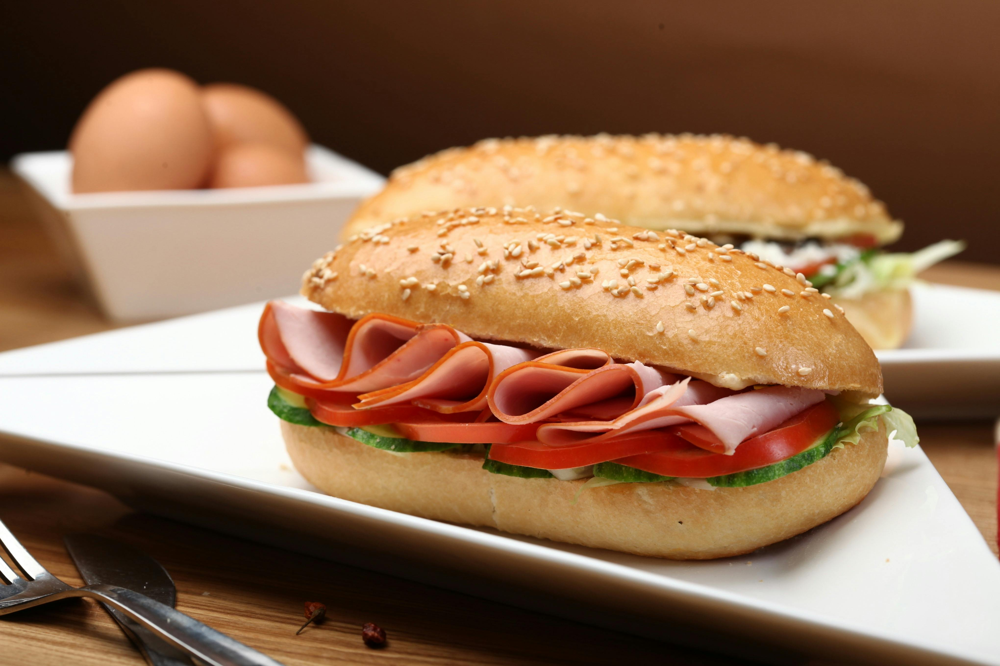

Waarom gezond?

Gezond eten is belangrijk omdat nacht werkers afwijkende eet en slaap ritmes hebben. Het menselijk lichaam verteert voedsel minder makkelijk in de nacht. Vet eten kan daardoor voor maag en darm klachten zorgen. Ook heeft gezond eten in het algemeen possitief effect op lichaams gezondheid en verminderd de kans op hart klachten. Ook is het belangrijk om na een nacht dienst je maaltijden goed te timen en ’s ochtends niet te veel te eten. te veel eten na een nachtdienst kan zorgen voor een slechte nacht rust (of dag rust als je overdag slaapt)